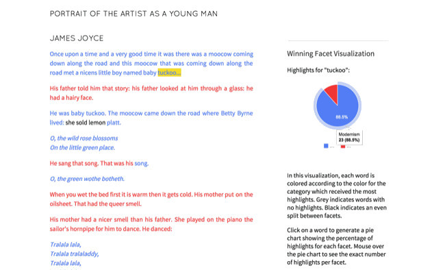
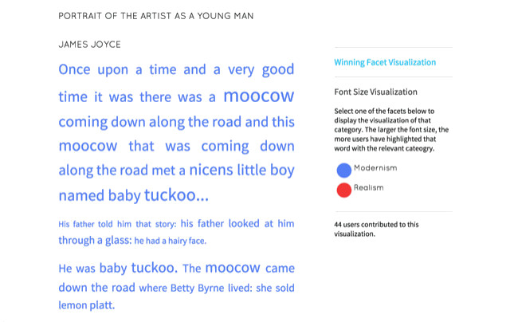

Prism was a project for crowdsourced text analysis developed by the Praxis Program at the Scholars' Lab, a center for experimental digital research at the University of Virginia Library. After years of significant use, particularly by K-12 educators, as of summer of 2020 Prism is no longer available as a usable tool. This site is meant to document the intervention it made, and it primarily presents archival versions of the writings that accompanied the tool on its site.
Prism was released under a CC-BY 3.0 license. The materials below were largely drawn from the original Prism site, though they have been lightly updated and edited based on recent activities (mostly verb tense). After a short description of different ways to run similar activities in the classroom, the subsequent sections each describe particular pages from the original Prism site, all originally published in 2013 with small changes over the years.
Pedagogical Alternatives to Prism
While the tool was envisioned originally to be used for research into crowdsourced interpretation, it saw significantly more use by K-12 teachers. This user group used the tool to track understanding and language literacy, asking users, for example, to mark passages they did or did not understand. Another example from second language learning asked readers to mark verb tenses in use throughout a passage, offering at a glance a sense of what areas needed to be reinforced for students. Given the heavy classroom use of Prism, we wanted to offer a few alternative ideas for related tools and activities that teachers might use instead.
If you are still intrigued by Prism, you might explore the original transparency game that Prism was based upon. The idea is pretty simple. You need:
A set of transparencies
A set of dry erase markers
A short passage printed out with several copies
An interpretive prompt
As we played it while preparing for Prism, each person gets a copy of the text, a transparency, and three colored dry erase markers (we went with red, green, and blue). It's important that every person have the same colors for the exercise to be meaningful. The interpretive prompt needs some constraint to be meaningful, and, again, we chose to assign single words to particular colors. At the start of a timer, each person is asked to place the transparency over their text, read it, and highlight words and passages based on their connections to the highlighter colors/categories. At the end, you collect the transparencies, stack them, and discuss the ways the colors do or do not overlap.
This transparency game, of course, requires in-person instruction. You could approximate some version of the effect by adopting a think-pair-share format. I would start by asking students to highlight a text individually and then, in breakout rooms, pair students off to compare their highlights. From there, the group can reconstitute itself for larger discussion. You won't exactly replicate the effect of visualizing overlapping interpretations, but, then again, the visualization was always meant to be a metaphor for–and in the serve of–discussion more generally. If you are interested in text analysis writ large, Voyant remains a user-friendly online alternative (with far more functionality). And Now Comment is a good alternative for generating class discussion more generally in an online environment.
Page 1: About Prism
Published around 2013, the text of the Prism about page conveyed the intervention it tried to make.
Prism was a tool for "crowdsourcing interpretation." Users were invited to provide an interpretation of a text by highlighting words according to different categories, or "facets." Each individual interpretation then contributed to the generation of a visualization which demonstrated the combined interpretation of all the users. The team envisioned Prism as a tool for both pedagogical use and scholarly exploration, revealing patterns that exist in the subjective experience of reading a text.
The concept emerged from a decade-long conversation on categories of textual interpretation which took place at the University of Virginia, and specifically from transparency mark-up games played by UVa Media Studies students and at SpecLab:
the original game involved shared, Xeroxed page images, transparent overlays, dry-erase markers, a common interpretive prompt, and a moment in which somebody yelled ‘Stop!’ and the transparencies were stacked up for discussion. (Nowviskie)
At SpecLab, Jerome McGann and Johanna Drucker further developed the concept, which became known as the "Patacritical Demon" — the best bit of vaporware (not) to emerge from UVa at the turn of the century.
The Scholars' Lab offered these un-realized concepts as inspiration for the first project to be undertaken by graduate student fellows of the Praxis Program in its inaugural year. The task of the 2011-2012 team of students was to determine how to translate the physical exercise of marking a text into a digital one. They chose to employ a constrained interpretive vocabulary and to limit the length of the text in order to stay true to the transparency game. Like the transparency exercise, the end goal of Prism was to produce aesthetic provocations, that is, visualizations which provoke further discussion.
The 2012-2013 cohort of Praxis fellows (listed below) retained the vision set by the original team. Their goal was to expand Prism to a format that would promote classroom use and scholarly conversation. This led them to define two primary objectives. The first was the ability for users to upload their own texts and to define their own interpretive categories. The second was to create a more inviting and user-friendly environment that would encourage participation and exploration. To that end, they redesigned the website, paying special attention to workflow, ease of use, and aesthetic concerns. In addition, both the simple visualization feature and highlighting function were refined, in hope that Prism can now be more easily employed by the user for a variety of interpretive projects.
The front page of Prism was designed to be playful and inviting. Users could upload their own Prism documents or participate in highlighting documents that already existed. At the time Prism was retired, there tens of thousands of distinct Prism documents uploaded. The handful of first documents - "The Raven," "Portrait of the Artist as a Young Man", "The Sneetches," and "Notes on the State of Virginia" - had markings from between 80 and 800 users.
Page 3: Prism Highlight Page
The highlight page was the main point of entry for interacting with a text through Prism. After uploading a document, a user was asked to mark their interpretation along particular categories. The cursor and interface mimicked the act of highlighting the documents like you would in the original transparency game.
Page 4: Prism Visualization Page Part 1

The visualization page offered two options.
The tool collected all the markings of each person who had played with the document to offer two visualizations. The "Winning Facet Visualization" used Google Charts API to show, at a glance, which interpretation was marked more heavily for a particular word.
Page 4: Prism Visualization Page Part 2

The "Font Size Visualization" offered users the chance to see, within a particular category, which words were marked most frequently. Whereas "Winning Facet Visualization" could, for example, show which words were marked realism vs modernism, the "Font Size Visualization" could show which words were the most modernist, at least according to the readers.
Page 5: Original Demo Video
This video, originally used as a tutorial for the tool, gives a sense of how the tool was meant to function.
Page 6: Planned Future Directions at Completion of Development in 2013
Thinking About Texts
Although the 2012-2013 cohort eventually chose to focus our efforts on expanding the word-based capabilities of Prism, we had many discussions throughout year about expanding our conception of “texts” to include more than the written word. Could Prism be used to generate collaborative readings of photographs, maps, musical scores, or audio clips? In response to this question, we came up with a number of ideas. Here, we have chosen to share some of those possibilities.
Interpreting Photographs
There already exist a number of promising image-based web applications. Projects such as Snapshot Serengeti use crowd sourcing to complete scholarly and research based projects. Others, such as ImagePlot, identify macro patterns through a series of images. In addition, there are a number of applications which allow you to annotate images as an individual and perhaps view other annotations of the same document (e.g. Tile, Uvic, and A.nnotate). However, most of these applications don’t allow you to overlay multiple annotations in order to generate a collaborative interpretation. That’s where Prism could come in.
As a test case, we tried using the transparency game on an image. Drawing on her own research interests, Cecilia presented us with the following image. In a manner similar to the transparency game, we were then asked to highlight areas of the image that we identified as “southern.” The exercise resulted in some surprising results. In addition to highlighting the "colored" sign that was emblematic of the Jim Crow South, most readers also highlighted the boy's body. It is striking that they would see blackness, or this black boy, as representative of the South. One could argue that this is because of the proliferation of photographic images during the Workers Progress Administration that highlighted black, southern poverty.
Jim Crow Drinking Fountain, county courthouse lawn. Halifax, North Carolina, 1938.
How can this exercise be executed in a digital format? There are two basic problems. How will users be able to interact with the image and how will the resulting data then be aggregated and visualized? We discussed several options for highlighting images, but there are two which seem to hold the most promise. First, the image could be divided up into various sections which the users can “tag” with various categories, much like the tagging feature on facebook. To visualize the collaborative interpretation, we could then display the “winning” category for each section, much like the current option to display the winning facet for each word in Prism. Secondly, users could be given a paintbrush tool which would allow them to highlight whichever elements on the page they see fit. In that case, we could visualize the resulting interpretation through a heat map layered over the photograph. Those portions that receive the most markings would turn red and the least blue, for example.
Word-based Texts: Additional Possibilites
In addition, there are a number of ways in which Prism might expand its ability to work with written texts. The first is to offer additional ways to visualize the collaborative interpretations. Below are a number of sketches from the 2011-2012 Praxis team. You can see that we have realized some of these ideas in this edition of Prism. Users can now view a pie chart which presents the percentage of users who highlighted for each facet under the “winning color” visualization option. In addition, provocative visualizations could draw upon existing web applications that use text mining, such as the word clouds generated through applications like Voyant.
Other possibilities for Prism include expanding the way in which Prism creates collaborative interpretations by relying on computational linguistic analysis. Specifically, this would allow for a more open-ended interpretation process. Imagine if users were free to apply any description they see fit to a passage of text or a particular word (similar to the capabilities offered by NowComment). Prism would then process these comments through topic modeling (e.g. Jockers’ work) to visualize the most common words invoked by users. In addition, this process could be paired with a thesaurus in order to computationally identify synonyms, allowing for a more synthesized collaborative interpretation based on open-ended commentary from users.
Page 7: Contributors
The Praxis Program
The Praxis Program is a key mentoring and training project of the Scholars' Lab at the University of Virginia Library, in which six humanities graduate students spend a year in a collaborative, hands-on, digital humanities apprenticeship. The program’s goal is to better equip knowledge workers for emerging faculty positions and alternative academic careers at a moment in which new questions can be asked and new systems built. Visit the Praxis Program site to learn more about the program’s evolving curriculum and to hear directly from Praxis Fellows and Scholars’ Lab faculty and staff as they blog about their experiences. The first two, pilot years of the Praxis Program were supported by a generous grant from the Mellon Foundation to UVa Library's Scholarly Communication Institute, which also allowed the Scholars' Lab to create a broader Praxis Network, in collaboration with six other universities in three countries.
2012-13 Praxis Alumni
Shane Lin
Shane Lin refactored the database schema and worked on user uploads. He commands the loyalty of forest creatures and once won second place in a baking competition. He is a graduate student in the History department.
Claire Maiers
Claire Maiers, herder of cats, served as the Project Manager and worked on copy for the Prism website. She is a PhD student in the Sociology department.
Cecilia Márquez
Cecilia Márquez worked on the design team building and breaking CSS like it was her full time job. Her crowning achievement in Praxis was he making almost everyone in the office say "Honey Boo Boo" at least once. She is a PHD student in the History department.
Gwen Nally
Gwen Nally was our Prism Designer. She worked with Cecilia Márquez to create wire frames and to style the website. She is a PhD candidate in the Philosophy department.
Chris Peck
Chris Peck worked on improvements to the highlighter tool and visualizations. He is a PhD student in the Music Department.
Brandon Walsh
Brandon Walsh worked on implementing Omniauth, helped with user uploads, and generally made snarky comments while the rest of the design team was working. He is a PhD student in the English department.
2011-2012 Praxis Alumni
Alex Gil
Alex Gil did early development on the Rails setup. The most continental of the Fellows, Alex also built an i18n framework for multi-lingual support and translated the site into French, Spanish, and German. Towards the end he worked on migrating Prism to production. Alex is a doctoral candidate in the UVa English Department.
Brooke Lestock
Brooke Lestock served as Project Co-Manager, along with the fabulous Sarah Storti. Brooke was also a member of the design team, which entailed conceptualizing and wireframing the Prism site, styling odds and ends, as well as contributing and editing prose for the site as needed. She is a master's candidate in the UVa English Department.
Lindsay O'Connor
Lindsay O'Connor was the devoted web designer among the Praxis Fellows. With plenty of help from Brooke and Sarah and Scholars' Lab R&D, she translated the team's wireframes and Ed's static page designs into their current web format, and also managed some of the design workflow. Lindsay is a doctoral candidate in the UVa English Department.
Sarah Storti
Sarah Storti was Project Co-Manager, together with the incomparable Brooke Lestock. Additionally, Sarah participated in design team discussions, helped to solidify the user story and wireframes for the site, and spent a significant amount of time writing, reading, and editing Prism site prose. She is a doctoral candidate in the UVa English Department.
Joanna Swafford
Joanna Swafford acted as lead developer for the project. She built the data model and the necessary Rails framework, along with the javascript that enables highlighting and visualizing the texts. Annie also stepped up as all-purpose trouble-shooter extraordinaire in the final weeks of development. She is a doctoral candidate in the UVa English Department.
Ed Triplett
Ed Triplett, artistic visionary, designed a static prototype of the Prism webpage. His other duties included creating the Prism logo as well as making Adobe Illustrator versions of the many wireframes that emerged from design meetings. Ed also contributed sketches of possible future visualizations. He is a doctoral candidate in the UVa McIntire Department of Art.
The Scholars' Lab
The Scholars’ Lab
was established in 2006 by the University of Virginia Library as a site for innovation in the humanities and social sciences.
The Scholars' Lab is a place where faculty and advanced students can explore digital resources, find expert help, and collaborate on innovative research projects.
The SLab also hosts events, such as workshops, talks, and roundtables, and sponsors the Praxis Program and a prestigious
graduate fellowship in the digital humanities.
Jeremy Boggs
Humanities Design Architect (of Dreams), UVa Library Scholars' Lab; Wizard of Web Aesthetics
Wayne Graham
Head of R&D, UVa Library Scholars' Lab; The Obi-Wan Kenobi of Programming
Eric Johnson
Head of Outreach & Consulting, UVa Library Scholars' Lab; Resident Nice Guy
David McClure
Web Applications Specialist, UVa Library Scholars' Lab; All-Around Wunderkind
Dr. Bethany Nowviskie
Director, Digital Research & Scholarship, UVa Library; Our Fearless Leader